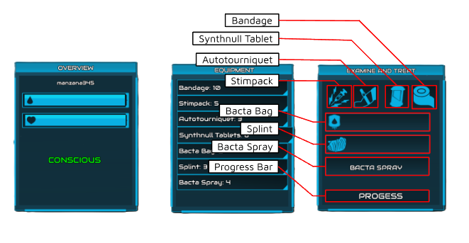

Table of Contents
1 | INTRODUCTION Pg. 1-3
1.1 | Summary
1.2 | Status Effects
2 | CONTROLS Pg. 4-5
2.1 | Using a Bacta Tank
2.2 | Carrying
2.3 | Opening the Medical Menu
3 | UI Pg. 6-8
3.1 | Overview Window
3.2 | Equipment Window
3.3 | Examine and Treat Window
4 | EQUIPMENT Pg. 9
4.1 | Standard Supplies
4.2 | Field Medic Supplies [W.I.P.]
5 | ADMINISTERING TREATMENT Pg. 10
5.1 | Bandage
5.2 | Stimpack
5.3 | Autotourniquets
5.4 | Synthnull Tablets
5.5 | Bacta Bag
5.6 | Splint
5.7 | Bacta Spray
6 | FIRST AID & CHARACTER MECHANICS Pg. 11-12
6.1 | Reviving a Downed Player
6.2 | Fall Damage Mechanics
1 | INTRODUCTION
1.1 | Summary
The CW:P Medical System consists of six status effects: bleeding, pain, fractured, unconscious, overdosed, and critical state...
1.2 | Status Effects
As of September 19, 2025, there are four main ways to receive these status effects. The most common cause is when a player is shot. The second cause is through fall damage, the third cause is when occupying an exploding vehicle, and the fourth is by a lightsaber.
- Critical State - 30% chance to occur once your blood reaches 0 No medical aid can be rendered Can be fixed by having a second person place you into a bacta tank
- Bleeds - Chance to occur when getting shot or caught in a vehicle explosion. Guaranteed to occur
when
downed.
Light Bleed • 40s before you bleed out & die/enter critical state. Medium Bleed • 25s before you bleed out & die/enter critical state High Bleed • [Unknown] - Pain - Chance to occur when getting shot or caught in a vehicle explosion. Guaranteed to occur when downed or taking fall damage. Pain slowly disappears on its own once bleeding status has been cleared. Light Pain • 12-20 seconds before it disappears Medium Pain • 14-16 seconds before it disappears High Pain • Caused by severe fall damage • Often associated with unconsciousness • ~26 seconds before it disappears
- Fractured - Guaranteed to occur when taking fall damage greater than ~65 studs. Chance to occur when hit with a lightsaber • Disables Sprinting and Rolling; increasing walkspeed by ~314%
- Consciousness - Defines whether you’re active or downed. Conscious • Starting status for every trooper • Allows you to use equipment and medical supplies. Unconscious • Occurs when your health has reached 0 • Does not allow you to use equipment or medical supplies • Receiving damage while downed results in death, bypassing the critical state and blood system
- Overdosed - Occurs when a player intakes more than 5 Synthnull Tablets • Can be fixed with a secondary person providing a stimpack
2 | CONTROLS
2.1 | Using a Bacta Tank
Walking up to a Bacta Tank will display a prompt...
2.2 | Carrying
Pressing V when a downed player is nearby attaches the downed player's model...
2.3 | Opening the Medical Menu
Pressing U opens the CW:P medical menu...
3 | UI
3.1 | Overview Window
Opening the medical menu reveals three windows...
3.2 | Equipment Window
The middle window titled “Equipment” lists supplies...
3.3 | Examine and Treat Window
The rightmost window is where items are used by clicking icons...

4 | EQUIPMENT
4.1 | Standard Supplies
All personnel start with the following quantities...
- BANDAGES: 10
- STIMPACKS: 5
- AUTOTOURNIQUETS: 3
- SYNTHNULL TABLETS: 8
- BACTA BAGS: 2
- SPLINTS: 3
- BACTA SPRAY: 4
4.2 | Field Medic Supplies [W.I.P.]
Not available until weight properties are released.
5 | ADMINISTERING TREATMENT
Each medical item has a unique purpose...
6 | FIRST AID & CHARACTER MECHANICS
6.1 | Reviving a Downed Player
To tell when a player is downed, their character will either ragdoll...
6.2 | Fall Damage Mechanics
Ladders do not stop fall damage. Catching yourself only delays it...